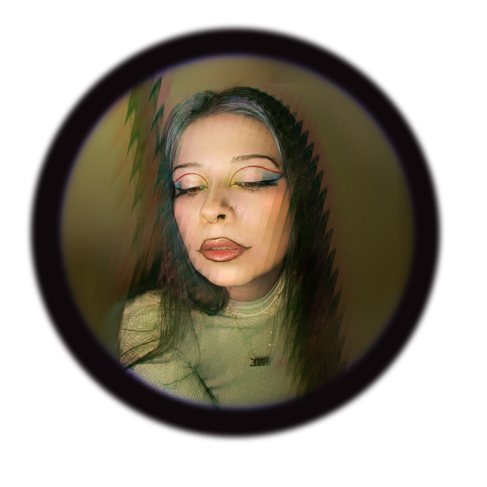

about
Born in Moscow (Russia), raised in Hessen (Germany), and currently based in Berlin (Germany). Silly shortie, obsessed with memes and standup comedy. Coffee in the mornings, beer somewhere in between. But all of this is not as important as my 10+ years of photography experience and a bunch of other cool stuff that I did.
My current priority is to document, archive and expand my photography work publicly. Lots of my older work (before 2018) did not make it until this day, except for if I’m actually gonna find the photos somewhere in the darkest corners of my ancient SD cards or something like that one day.
However, the more I shoot the more confident I become and can see the quality development.